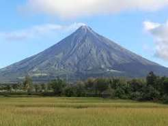

TOURIST DESTINATION
| HOME | PLACES | FOOD |
|---|
LUZON
|
 Mayon Volcano A famous active volcano in the Philippines, known for its nearly perfect cone shape and beautiful scenery. |
.jpg) Vigan A historic city famous for its well-preserved Spanish colonial architecture and cobblestone streets. |
 (1).jpg) Banaue Ancient rice terraces carved into the mountains by the Ifugao people over 2,000 years ago. |
 (2).jpg) Tagaytay A popular tourist city with cool weather and stunning views of Taal Volcano. |
 (3).jpg) Pagsanjan Falls A beautiful waterfall known for its exciting boat ride through a scenic river gorge. |
VISAYAS
.jpg) Boracay Boracay is a small tropical island in the province of Aklan, located in the central part of the Philippines. |
.jpg) Chocolate Hills unique brown hills |
.jpg) Kawasan Falls Chocolate Hills are a famous natural geological formation located in the province of Bohol, in the Philippines. |
 (1).jpg) Kalanggaman Kalanggaman Island is a small, pristine island located in the municipality of Palompon, Leyte, Philippines. It is famous for its long, powdery white sandbars that stretch into the turquoise waters, creating a breathtaking tropical landscape. |
.jpg) Guimaras home of sweet mangoes |
MINDANAO
.jpg) Samal Island beatiful beach island |
.jpg) Siargao surfing capital of the philippines |
.jpg) Camiguin island of volcano ane hot spring |
.jpg) Eden Nature Park peaceful mountain park |
.jpg) Tinago Falls hidden scenic waterfalls |
GRADE/SECTION: 11 - Latorena